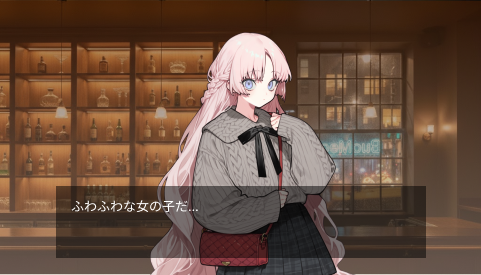
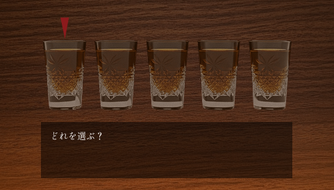
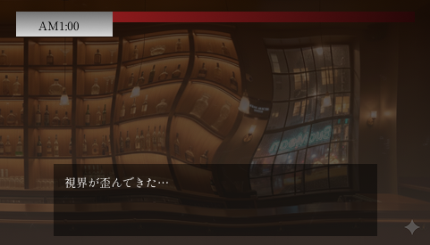

本作はテキストを読み進める形の「テキストアドベンチャーゲーム」です。
ストーリー中選んだ選択肢によってその後の物語も変化します。
何気ない一言が、この夜の結末を左右するかもしれません。
各ラウンドではミニゲームによって勝敗が決まり敗者はテーブルに並べられた
ショットグラスから 一つずつ選んで飲むことになります。
しかしこのお酒は誰が飲むのか、どのくらい酔うのか完全にランダム。
運と判断、そして人間関係が絡み合う、静かな心理戦が始まります。


酒を重ね、酔いゲージが限界に達した時＿＿ その人物は理性を失います。
過去、後悔、誰にも言えなかった秘密、隠し続けた醜態。
酔いに任せて暴露された真実は、他の客たちの空気を一変させ、
そしてその人物はゲームから脱落します。
※掲載している画像は開発中のものです。